9.1 Regras de Newton-Cotes
O método básico para encontrar as regras de integração consiste em aproximar a integral de por uma combinação linear de 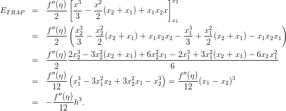 valores1 de 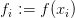, ou seja,

Podemos obter os coeficientes  aproximando a função
aproximando a função  pelo polinômio
de Lagrange
pelo polinômio
de Lagrange  que interpola
que interpola  , tal que,
, tal que,
|
| (9.3) |
Substituindo na integral obtemos
A fórmula de quadratura é então
|
| (9.5) |
onde
|
| (9.6) |
9.1.1 Somas de Riemann
O método mais simples de aproximar

 por um polinômio constante no
intervalo 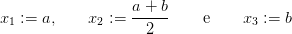, ou seja,
por um polinômio constante no
intervalo 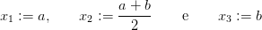, ou seja,  . Se aproximarmos
. Se aproximarmos  pelo ponto a esquerda
do intervalo temos que
pelo ponto a esquerda
do intervalo temos que  e
e  intervalo.
intervalo.
Quando subdividimos ![[a,b]](main3492x.png) em 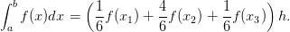 intervalos com tamanho
em 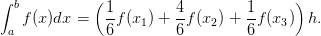 intervalos com tamanho  nos pontos
nos pontos  , em cada intervalo
, em cada intervalo  aproximamos a área
por
aproximamos a área
por

Podemos obter uma fórmula similar se usarmos os pontos a direita do intervalo, ou seja, as somas de Riemann à direita
Uma terceira opção é utilizar o ponto médio do intervalo 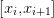 o qual fornece a regra do ponto médio
|
| (9.9) |
9.1.2 Regra do Trapézio
A regra do trapézio consiste em aproximar a função  por um polinômio de
grau 1. Se utilizarmos uma reta ligando extremos do intervalo obtemos um
trapézio que fornece o nome da regra.
por um polinômio de
grau 1. Se utilizarmos uma reta ligando extremos do intervalo obtemos um
trapézio que fornece o nome da regra.
Desta forma, utilizando  ,
,  ,
,  e a notação
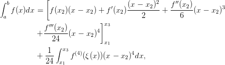 obtemos através da interpolação de Lagrange o polinômio
e a notação
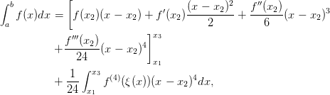 obtemos através da interpolação de Lagrange o polinômio

 por
por  e integrando obtemos
e integrando obtemos 
de onde obtemos a regra do trapézio dada por
 | (9.11) |
Erro na regra do trapézio
O erro na regra do trapézio pode ser obtida integrando o erro da interpolação de Lagrange,
 tal que
tal que ![[ ]
f ′′(η ) x3 x2 x2
ET RAP = ------ ---- --(x2 + x1) + x1x2x
2 ( 3 2 x1 )
f ′′(η ) x32 x22 x31 x21
= ------ ---- ---(x2 + x1 ) + x1x2x2 ----+ ---(x2 + x1 ) - x1x2x1
2 3 2 3 2
f-′′(η-)2x32---3x22(x2-+-x1)-+-6x22x1---2x31 +-3x21(x2-+-x1-) --6x2x21
= 2 6
f ′′(η )( ) f ′′(η )
= ------ x31 - 3x21x2 + 3x22x1 - x32 =------(x1 - x2)3
12 12
f′′(η)- 3
= - 12 h .](main3517x.png)
Assim o erro na regra do trapézio é

Exemplo 9.1.1. Use a regra do trapézio para aproximar a integral

Usando o intervalo ![[0,1]](main3521x.png) , temos
, temos  ,
,  e
e  . A regra do
trapézio resulta em
. A regra do
trapézio resulta em
![[0,1∕2]](main3526x.png) e
e ![[1 ∕2,1 ]](main3527x.png) e usando a regra do trapézio em cada
um dos intervalos, temos:
e usando a regra do trapézio em cada
um dos intervalos, temos:
9.1.3 Regra de Simpson
Na regra de Simpson aproximamos  por um polinômio de grau
por um polinômio de grau  , portanto
precisamos três pontos do intervalo
, portanto
precisamos três pontos do intervalo ![[a,b]](main3532x.png) . Utilizando, por definição,
. Utilizando, por definição,

 , podemos obter o polinômio de Lagrange
, podemos obter o polinômio de Lagrange
 |
Aproximando  por
por  e integrando temos
e integrando temos


Exemplo 9.1.2. Obtenha os coeficientes  do método de Simpson
integrando os polinômios de Lagrange 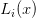.
do método de Simpson
integrando os polinômios de Lagrange 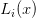.
Fazendo uma translação para a origem (subtraindo  de
de  e )
e )


Erro na regra de Simpson
Se usarmos a mesma metodologia da regra dos trapézios, teremos
Considere o polinômio de Taylor em  ,
,

|
|
Pelo teorema do valor médio, existe 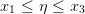 tal que
![∫ [ 2 ′′
bf (x )dx = f(x )(x - x ) + f ′(x )(x---x2) + f--(x2-)(x - x )3
a 2 2 2 2 6 2
′′′ ]x3
+ f--(x2)(x - x2)4
24 x1
(4) ∫ x
+ f---(η-) 3(x - x2)4dx
24 x1
[ (x - x2)2 f ′′(x2 )
= f(x2 )(x - x2 ) + f ′(x2)-------- + -------(x - x2)3
] 2 6
f ′′′(x2) 4 x3
+ -------(x - x2)
24 x1
f(4)(η )[ 5]x3
+ ------- (x - x2) x1
120](main3555x.png) |
Usando o fato que

 , temos
, temos  que substitua
que substitua  e
e  com a
seguinte estimativa
com a
seguinte estimativa
Exemplo 9.1.3. Use a regra de Simpson para aproximar a integral


Usando o intervalo ![[0,1]](main3569x.png) , temos
, temos  ,
,  , 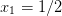 e
, 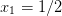 e  . A
regra de Simpson resulta em
. A
regra de Simpson resulta em
![[0,1∕2]](main3575x.png) e
e ![[1 ∕2,1 ]](main3576x.png) e usando a regra do trapézio em cada
um dos intervalos, temos:
e usando a regra do trapézio em cada
um dos intervalos, temos:

Exercícios
E 9.1.1. Calcule numericamente as seguintes integrais:
E 9.1.2. Dados os valores da função  ,
,  ,
,  e
e
 , calcule o valor aproximado de
, calcule o valor aproximado de

Resposta. Resp:  ,
,  e 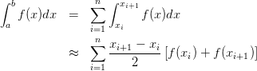.
e 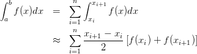.
E 9.1.3. Dê a interpretação geométrica dos métodos do ponto médio, trapézio e Simpson. A partir desta construção geométrica, deduza as fórmulas para aproximar
Resposta.

E 9.1.4. Calcule numericamente o valor de 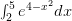 usando os métodos compostos do ponto médio, trapézio e Simpson. Obtenha os resultados utilizando, em cada quadratura, o número de pontos indicado.
| n | Ponto médio | Trapézios | Simpson | |
 | ||||
 | ||||
 | ||||
 | ||||
Resposta.
| n | Ponto médio | Trapézios | Simpson | |
| 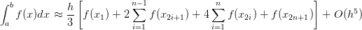 | 0.1056606 | 0.7503919 | 0.5005225 | |
 | 0.1726140 | 0.3964724 | 0.2784992 | |
 | 0.1973663 | 0.3062023 | 0.2393551 | |
 | 0.2084204 | 0.2721145 | 0.2306618 | |
E 9.1.5. Use as rotinas construídas em aula e calcule numericamente o valor das seguintes integrais usando o método composto dos trapézios para os seguintes números de pontos:
![|-----|--|-----------|-----------|-----------------------|-----------------------|
| | |∫ 1 -4x2 |∫ 1--1- | ∫ 1 4 4 | ∫ 1 - 21-- |
|-n---|h-|-0-e----dx-|-0-1+x2dx--|----0-x-(1---x)-dx-----|------0-e--x+1dx-------|
| | | | | | |
|-17--|--|-0.4409931--|-----------|-----------------------|-----------------------|
| 33 | | 0.4410288 | | | |
|-----|--|-----------|-----------|-----------------------|-----------------------|
| 65 | | 0.4410377 | | | |
|-----|--|-----------|-----------|-----------------------|-----------------------|
|129 | | 0.4410400 | | | |
|-----|--|-----------|-----------|-----------------------|-----------------------|
-257-------0.4410405---------------------------------------------------------------
| | | | | | |
|513--|--|-0.4410406--|-----------|-----------------------|-----------------------|
| | | | | -3 | -1 |
|1025-|----0.4410407---0.7853981---1.5873015873016--⋅-10----4.6191723776309--⋅ 10---
| |](main3598x.png)
* As versões do livro disponíveis no site podem estar desatualizadas, veja a versão PDF atual no repositório GitHub oficial do projeto.
- IME - UFRGS